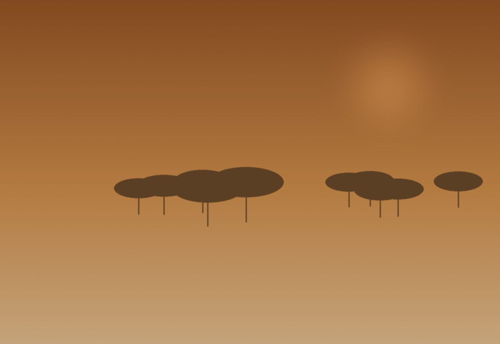

Nuestra historia
Casa de viajes nacida en Buenos Aires con la idea de que un viaje no se reserva: se compone. Diseñamos itinerarios para personas curiosas a las que les sobra el dinero pero les falta el tiempo — y para quienes no tienen ninguna de las dos cosas pero saben dónde ponen el corazón.

La idea nació en Argentina, en una conversación familiar después de un primer safari africano. Volvimos con una certeza: la diferencia entre un buen viaje y uno memorable está en el guía, en la mesa, en el tiempo que se le dedica a cada sitio. No en el precio del hotel.
Las primeras salidas fueron a Kenia y Tanzania, con guías masais que nos enseñaron a leer el silencio de la sabana. Esa primera red — un puñado de personas confiables sobre el terreno — sigue siendo el corazón de la casa.
Ver nuestros viajes africanos
De Buenos Aires a Madrid, de Nairobi a Kioto, de Dubrovnik a Cuzco. Diecisiete oficinas con equipo propio que conoce el terreno desde adentro. Esa red no se compra ni se franquicia: se construye una relación a la vez, una invitación a la mesa familiar a la vez.
El crecimiento llegó porque siempre rechazamos volúmenes que comprometieran la calidad. Si un viaje no podemos componerlo como queremos componerlo, preferimos no hacerlo.
Conocer los destinos
Algunos itinerarios son la suma de muchos pequeños. Otros son uno solo, grande, que se prepara con meses de antelación. Para esos diseñamos travesías polares en buques pequeños, vueltas al mundo en jet privado, expediciones a salidas que sólo abren tres veces al año.
Trabajamos con biólogos, fotógrafos, historiadores, chefs. La diferencia se nota en las conversaciones de la cena, no en el equipaje.
Ver expediciones
El uno por ciento de cada salida se destina a proyectos comunitarios en los lugares por los que pasamos. Cuarenta y siete iniciativas activas en siete continentes, gestionadas por equipos locales y auditadas de manera independiente.
Trabajamos con escuelas rurales, centros de conservación, cooperativas de mujeres y proyectos de agua potable. No es marketing: es lo que hace sostenible una práctica de viaje que toca lugares frágiles.
Conocer la Fundación B&A
"Hay buenas vacaciones, y después están los viajes de toda una vida. Las pequeñas expediciones de B&A son, decididamente, de los segundos."— Reseña de viajero · Buenos Aires